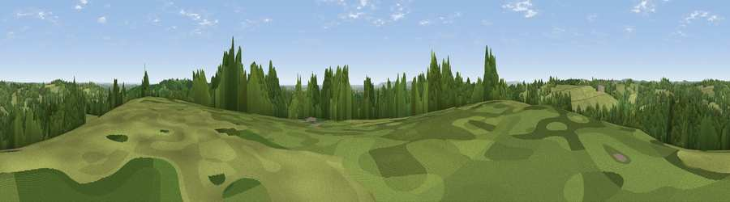

Hooksdown
#16687 in England · top 22% of its area beats it · near Punnett's TownThe view, rendered

A 360° render of this exact spot computed from the terrain model, tree cover and land cover — summer colours, afternoon light, calibrated against photographs of famous viewpoints. Real trees, hedges and buildings will differ in detail.
The panorama
Grey silhouette: terrain skyline in each direction (720 bearings, Earth curvature and refraction included). Dashed green: skyline with trees (+15 m) and buildings (+8 m) as obstacles. Blue strip: how far the ground is visible on each bearing.
Where the view opens
Wedge length = distance to the farthest visible ground on that bearing (vegetation-aware). Rings at 10, 25 and 50 km.
What fills the view
51% grassland · 44% woodland · 2% cropland · 1% built-up ·
Angular shares of the visible panorama (visual magnitude), not map area. Landscape diversity 0.39 (0–1 Shannon).
Key numbers
More beautiful places nearby
The staircase of upgrades: each row has a higher view potential than everything closer. Driving times are estimates from straight-line distance, calibrated against real road routing — check an actual route before setting out.
| Place | Direction | Drive | Score |
|---|---|---|---|
| Viewpoint near Cade Street | W · 1 km | ~4 min | 56.7 |
| Viewpoint near Rushlake Green | SSE · 2 km | ~5 min | 57.4 |
| Brightling Obelisk [Brightling Down] | E · 4 km | ~10 min | 69.1 |
| Viewpoint near Wilmington | SSW · 19 km | ~32 min | 81.8 |
| Viewpoint near Willingdon | SSW · 19 km | ~33 min | 83.4 |
| Wilmington Hill | SSW · 19 km | ~33 min | 85.4 |
| Viewpoint near Alciston | SW · 21 km | ~35 min | 86.8 |
| Firle Beacon | SW · 21 km | ~35 min | 88.9 |
50.96391, 0.31681 · source: dobih hill · position refined by local search. Computed location — check access rights before visiting.